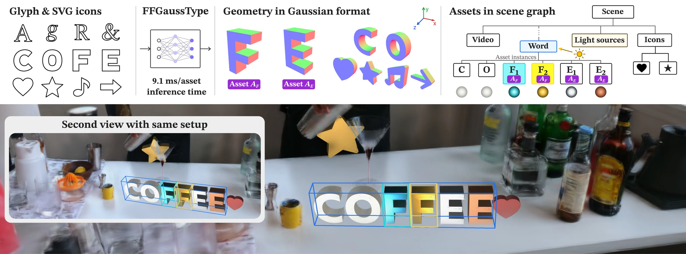
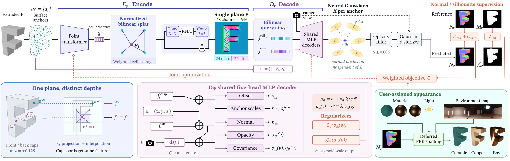
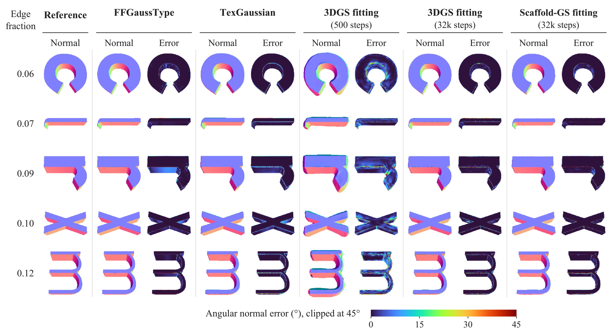
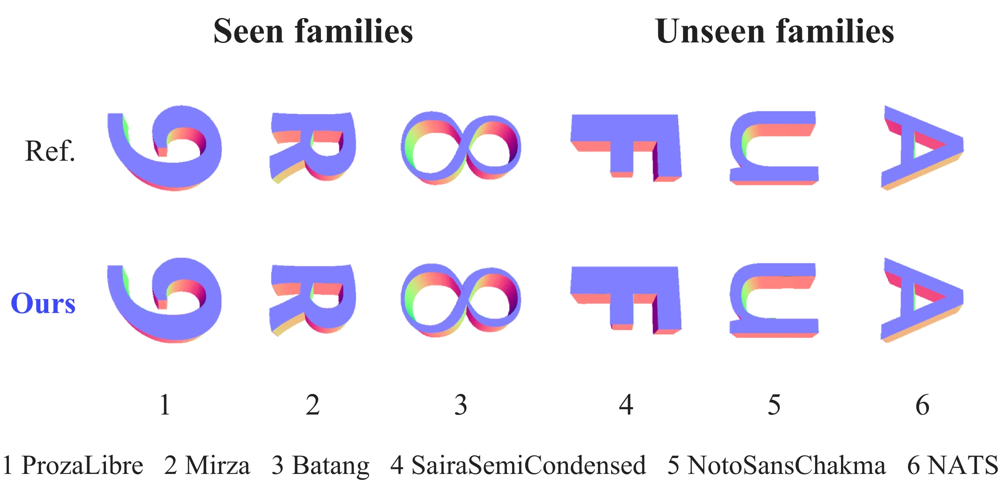

Overview

Bring text and icons into volumetric videos built on 4D Gaussians. FFGaussType converts an extruded glyph or SVG outline into a Gaussian asset in a single forward pass. Its surface normals let creators restyle material and lighting freely, without converting again.
- 9.1ms to convert one asset
- 1.62° normal error on unseen fonts and icons
- 23.9kB per asset with HEVC video coding
- 27,221 paired glyph and icon assets
Abstract
Immersive 3D content allows text and graphical elements, such as subtitles, annotations, and icons, to be placed inside a scene rather than displayed as flat overlays. Placed this way, they respect occlusion and perspective and take on user-assigned materials and lighting while preserving their original shapes. In Gaussian scenes, however, each new glyph or icon requires its own iterative optimization, which limits scalable content creation. We present FFGaussType, which converts extruded glyph and SVG outlines into Gaussian assets in a single forward pass. A point encoder maps anchors sampled on the known surface to a single feature plane, from which a decoder shared by all assets predicts neural Gaussians carrying surface normals. This separates geometric conversion from material and lighting choices, and the feature plane supports image and video coding for compact delivery. We construct a paired dataset of 27,221 glyph and SVG icon assets with anchors and calibrated normal and silhouette renderings, holding out font families for evaluation. Conversion from prepared anchors takes 9.1 ms per asset, at a fraction of the compute and memory of prior baselines. On unseen font families and test icons, FFGaussType achieves 1.62° normal error and 0.985 silhouette IoU, the best among the compared feed-forward converters, matching the fidelity that per-asset fitting needs thousands of steps to reach. The code and dataset will be released after publication.
In a scene
Converted letters and icons, animated inside a Gaussian video scene.
Method

-
1Encode
A point transformer maps surface anchors to a single 64×64 feature plane. The anchors and this plane are the whole asset.
-
2Decode
A small decoder shared by all assets reads the plane and predicts Gaussians carrying surface normals.
-
3Shade
Creators pick materials and lights at render time and can change them whenever they like; the geometry stays as converted.
Results
FFGaussType is the most accurate of the compared feed-forward converters and the cheapest to run, at 9.1 ms and 97 MiB per asset. Ten seconds of refinement surpasses every per-asset fitting baseline in normal accuracy.
| Method | Input | Normal (°) ↓ | Edge band (°) ↓ | Δ normal | IoU ↑ |
|---|---|---|---|---|---|
| Full test split: 2,657 assets | |||||
| TexGaussian[1] | Mesh → points/normals | 1.957 | 13.86 | +0.339 | 0.9595 |
| TriplaneGaussian[2] | Anchors + 1 view | 5.926 | 18.84 | +4.308 | 0.9810 |
| LGM[3] | 4 views | 12.873 | 32.51 | +11.255 | 0.9576 |
| FFGaussType | Anchors | 1.618 | 8.98 | – | 0.9851 |
| 64-asset fitting subset | |||||
| 3DGS[4], 500 steps | Anchors + available views | 5.185 | 21.95 | +3.484 | 0.8357 |
| 3DGS, 2k | Anchors + available views | 2.123 | 14.74 | +0.422 | 0.9405 |
| 3DGS, 32k | Anchors + available views | 2.099 | 13.97 | +0.398 | 0.9811 |
| Scaffold-GS[5], 2k | Anchors + available views | 2.733 | 16.55 | +1.032 | 0.9400 |
| Scaffold-GS, 32k | Anchors + available views | 1.514 | 10.95 | −0.187 | 0.9863 |
| Plane-and-decoder fitting, 32k | Anchors + available views | 1.897 | 13.35 | +0.196 | 0.9828 |
| Mesh2Splat[6], default | Mesh | 2.371 | 20.89 | +0.670 | 0.9535 |
| GaMeS[7], 32k | Mesh + available views | 2.764 | 15.71 | +1.063 | 0.9700 |
| FFGaussType | Anchors | 1.701 | 8.90 | – | 0.9840 |
| FFGaussType + 10 s refinement | Anchors + available views | 1.313 | 8.98 | −0.388 | 0.9825 |


BibTeX
@misc{feng2026ffgausstype,
title = {{FFGaussType}: Feed-Forward Conversion of Glyph and {SVG}
Geometry into Compact {Gaussian} Assets},
author = {Feng, Haoan and Wang, Tianfu and Guan, Peimeng and
Lee, Dae Yeol and Su, Guan-ming},
year = {2026},
eprint = {2611.26431},
archivePrefix = {arXiv},
primaryClass = {cs.CV}
}